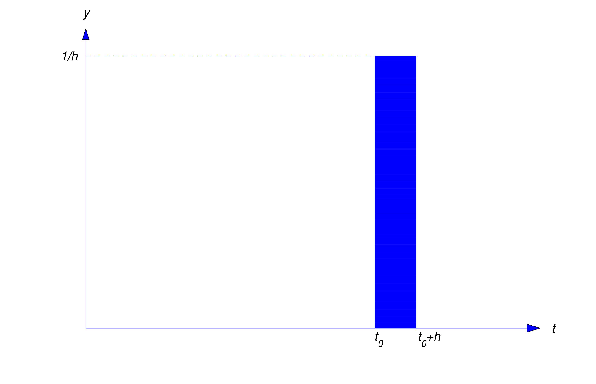
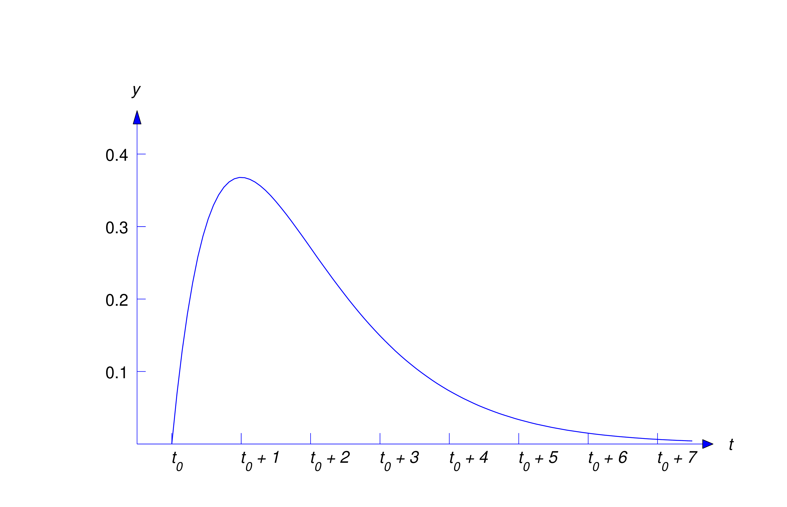

Section 8.7 Constant Coefficient Equations with Impulses
8.7
CONSTANT COEFFICIENT EQUATIONS WITH IMPULSES
So far in this chapter, we’ve considered initial value problems for the
constant coefficient equation \[ ay''+by'+cy=f(t)\] where \(f\) is
continuous or piecewise continuous on \([0,\infty )\). In this section we
consider initial value problems where \(f\) represents a force that’s very
large for a short time and zero otherwise. We say that such forces are
impulsive
. Impulsive forces occur, for example, when two objects collide. Since it
isn’t feasible to represent such forces as continuous or piecewise
continuous functions, we must construct a different mathematical model to
deal with them.
If \(f\) is an integrable function and \(f(t)=0\) for \(t\) outside of the
interval \([t_0,t_0+h]\), then \(\int _{t_0}^{t_0+h} f(t)\,dt\) is called
the
total impulse
of \(f\). We’re interested in the idealized situation where \(h\) is so
small that the total impulse can be assumed to be applied instantaneously
at \(t=t_0\). We say in this case that \(f\) is an
impulse function
. In particular, we denote by \(\delta (t-t_0)\) the impulse function with
total impulse equal to one, applied at \(t=t_0\). (The impulse function
\(\delta (t)\) obtained by setting \(t_0=0\) is the
Dirac\(\delta \) function
.) It must be understood, however, that \(\delta (t-t_0)\) isn’t a
function in the standard sense, since our “definition” implies that
\(\delta (t-t_0)=0\) if \(t\ne t_0\), while \[ \int _{t_0}^{t_0} \delta
(t-t_0)\,dt=1\] From calculus we know that no function can have these
properties; nevertheless, there’s a branch of mathematics known as the
theory of distributions
where the definition can be made rigorous. Since the theory of
distributions is beyond the scope of this book, we’ll take an intuitive
approach to impulse functions.
Our first task is to define what we mean by the solution of the initial
value problem \[ ay''+by'+cy=\delta (t-t_0), \quad y(0)=0,\quad y'(0)=0\]
where \(t_0\) is a fixed nonnegative number. The next theorem will
motivate our definition.
Theorem 8.7.1
Suppose \(t_0\ge 0.\) For each positive number \(h\), let \(y_h\) be the
solution of the initial value problem \begin {equation} \label
{eq:8.7.1} ay_h''+by_h'+cy_h=f_h(t), \quad y_h(0)=0,\quad y_h'(0)=0\end
{equation}
where \begin {equation} \label {eq:8.7.2} f_h(t)=\left \{\begin
{array}{cl} 0,&0\le t<t_0,\\ 1/h,&t_0\le t< t_0+h,\\
0,&t\ge t_0+h,\end {array}\right. \end {equation}
so \(f_h\) has unit total impulse equal to the area of the shaded
rectangle in Figure 8.7.1. Then \begin {equation} \label {eq:8.7.3} \lim
_{h\to 0+}y_h(t)=u(t-t_0)w(t-t_0)\end {equation}
where \[ w={\cal L}^{-1}\left (1\over as^2+bs+c\right )\]

Figure 8.7.1\(y=f_h(t)\)
Proof
Taking Laplace transforms in (8.7.1) yields \[ (as^2+bs+c)Y_h(s)=F_h(s)\] so \[ Y_h(s)={F_h(s)\over
as^2+bs+c}\] The convolution theorem implies that \[ y_h(t)=\int _0^t
w(t-\tau )f_h(\tau )\,d\tau \] Therefore, (8.7.2) implies that \begin {equation} \label {eq:8.7.4} y_h(t)=\left \{\begin
{array}{cl} 0,&0\le t<t_0,\\ \displaystyle {{1\over h}\int
_{t_0}^tw(t-\tau )\,d\tau },&t_0\le t\le t_0+h,\\ \displaystyle
{{1\over h }\int _{t_0}^{t_0+h}w(t-\tau )\,d\tau },&t>t_0+h.\end
{array}\right. \end {equation}
Since \(y_h(t)=0\) for all \(h\) if \(0\le t\le t_0\), it follows that
\begin {equation} \label {eq:8.7.5} \lim _{h\to 0+}y_h(t)=0\mbox {\quad if
\quad }0\le t\le t_0\end {equation}
We’ll now show that \begin {equation} \label {eq:8.7.6} \lim _{h\to
0+}y_h(t)=w(t-t_0)\quad \mbox{ if } \quad t>t_0\end {equation}
Suppose \(t\) is fixed and \(t>t_0\). From (8.7.4), \begin {equation} \label {eq:8.7.7} y_h(t)={1\over h}\int
_{t_0}^{t_0+h}w(t-\tau )d\tau \quad \mbox{ if } \quad h<t-t_0\end
{equation}
Since \begin {equation} \label {eq:8.7.8} {1\over h}\int
_{t_0}^{t_0+h}d\tau =1\end {equation}
we can write \[ w(t-t_0)={1\over h}w(t-t_0)\int _{t_0}^{t_0+h}\,d\tau =
{1\over h}\int _{t_0}^{t_0+h}w(t-t_0)\,d\tau \] From this and (8.7.7), \[ y_h(t)-w(t-t_0)= {1\over h}\int _{t_0}^{t_0+h}\left (w(t-\tau
)-w(t-t_0)\right )\,d\tau \] Therefore \begin {equation} \label {eq:8.7.9}
|y_h(t)-w(t-t_0)|\le {1\over h}\int _{t_0}^{t_0+h}|w(t-\tau
)-w(t-t_0)|\,d\tau \end {equation}
Now let \(M_h\) be the maximum value of \(|w(t-\tau )-w(t-t_0)|\) as
\(\tau \) varies over the interval \([t_0,t_0+h]\). (Remember that \(t\)
and \(t_0\) are fixed.) Then (8.7.8) and (8.7.9) imply that \begin {equation} \label {eq:8.7.10} |y_h(t)-w(t-t_0)|\le
{1\over h}M_h\int _{t_0}^{t_0+h}\,d\tau =M_h\end {equation}
But \(\lim _{h\to 0+}M_h=0\), since \(w\) is continuous. Therefore (8.7.10) implies (8.7.6). This and (8.7.5) imply (8.7.3). __
Definition8.7.2
If \(t_0>0\), then the solution of the initial value problem
\begin {equation} \label {eq:8.7.11} ay''+by'+cy=\delta (t-t_0), \quad
y(0)=0,\quad y'(0)=0\end {equation}
is defined to be \[ y=u(t-t_0)w(t-t_0)\] where \[ w={\cal L}^{-1}\left
(1\over as^2+bs+c\right )\]
In physical applications where the input \(f\) and the output \(y\) of a
device are related by the differential equation \[ ay''+by'+cy=f(t)\]
\(w\) is called the
impulse response
of the device. Note that \(w\) is the solution of the initial value
problem \begin {equation} \label {eq:8.7.12} aw''+bw'+cw=0, \quad
w(0)=0,\quad w'(0)=1/a\end {equation}
as can be seen by using the Laplace transform to solve this problem.
(Verify.) On the other hand, we can solve (8.7.12) by the methods of Section 5.2 and show that \(w\) is defined on
\((-\infty ,\infty )\) by \begin {equation} \label {eq:8.7.13}
w={e^{r_2t}-e^{r_1t}\over a(r_2-r_1)},\quad w={1\over a}te^{r_1t}, \quad \mbox{ or } \quad w={1\over a\omega }e^{\lambda t}\sin \omega t\end
{equation}
depending upon whether the polynomial \(p(r)=ar^2+br+c\) has distinct real
zeros \(r_1\) and \(r_2\), a repeated zero \(r_1\), or complex conjugate
zeros \(\lambda \pm i\omega \). (In most physical applications, the zeros
of the characteristic polynomial have negative real parts, so \(\lim
_{t\to \infty }w(t)=0\).) This means that \(y=u(t-t_0)w(t-t_0)\) is
defined on \((-\infty ,\infty )\) and has the following properties: \[
y(t)=0,\quad t<t_0\] \[ ay''+by'+cy=0\quad \mbox{ on } \quad (-\infty
,t_0)\quad \mbox{ and } \quad (t_0,\infty )\] and \begin {equation} \label
{eq:8.7.14} y'_-(t_0)=0, \quad y'_+(t_0)=1/a \end {equation}
(remember that \(y'_-(t_0)\) and \(y'_+(t_0)\) are derivatives from the
right and left, respectively) and \(y'(t_0)\) does not exist. Thus, even
though we defined \(y=u(t-t_0)w(t-t_0)\) to be the solution of (8.7.11), this function
doesn’t satisfy
the differential equation in (8.7.11) at \(t_0\), since it isn’t differentiable there; in fact (8.7.14) indicates that an impulse causes a jump discontinuity in velocity. (To
see that this is reasonable, think of what happens when you hit a ball
with a bat.) This means that the initial value problem (8.7.11) doesn’t make sense if \(t_0=0\), since \(y'(0)\) doesn’t exist in this
case. However \(y=u(t)w(t)\) can be defined to be the solution of the
modified initial value problem \[ ay''+by'+cy=\delta (t), \quad
y(0)=0,\quad y'_-(0)=0\] where the condition on the derivative at \(t=0\)
has been replaced by a condition on the derivative from the left.
Figure
8.7.2
illustrates Theorem
8.7.1
for the case where the impulse response \(w\) is the first expression in (8.7.13) and \(r_1\) and \(r_2\) are distinct and both negative. The solid curve
in the figure is the graph of \(w\). The dashed curves are solutions of (8.7.1) for various values of \(h\). As \(h\) decreases the graph of \(y_h\)
moves to the left toward the graph of \(w\).
Example 8.7.1
Find the solution of the initial value problem \begin {equation} \label
{eq:8.7.15} y''-2y'+y=\delta (t-t_0), \quad y(0)=0,\quad y'(0)=0\end
{equation}
where \(t_0>0\). Then interpret the solution for the case where
\(t_0=0\).
Solution
Here \[ w={\cal L}^{-1}\left (1\over s^2-2s+1\right )={\cal
L}^{-1}\left ( 1\over (s-1)^2\right )=te^{-t}\] so Definition
8.7.2
yields \[ y=u(t-t_0)(t-t_0)e^{-(t-t_0)} \] as the solution of (8.7.15) if \(t_0>0\). If \(t_0=0\), then (8.7.15) doesn’t have a solution; however, \(y=u(t)te^{-t}\) (which we would
usually write simply as \(y=te^{-t}\)) is the solution of the modified
initial value problem \[ y''-2y'+y=\delta (t), \quad y(0)=0,\quad
y_-'(0)=0\]
The graph of \(y=u(t-t_0)(t-t_0)e^{-(t-t_0)}\) is shown in Figure
8.7.3
__

Figure 8.7.3\(y=u(t-t_0)(t-t_0)e^{-(t-t_0)}\)
Definition
8.7.2
and the principle of superposition motivate the next definition.
Definition8.7.3
Suppose \(\alpha \) is a nonzero constant and \(f\) is
piecewise continuous on \([0,\infty )\). If \(t_0>0\), then the
solution of the initial value problem \[ ay''+by'+cy=f(t)+\alpha
\delta (t-t_0), \quad y(0)=k_0,\quad y'(0)=k_1 \] is defined to be \[
y(t)=\hat y(t)+\alpha u(t-t_0)w(t-t_0)\] where \(\hat y\) is the
solution of \[ ay''+by'+cy=f(t), \quad y(0)=k_0,\quad y'(0)=k_1\] This
definition also applies if \(t_0=0\), provided that the initial
condition \(y'(0)=k_1\) is replaced by \(y_-'(0)=k_1\).
Example 8.7.2
Solve the initial value problem \begin {equation} \label {eq:8.7.16}
y''+6y'+5y=3e^{-2t}+2\delta (t-1),\quad y(0)=-3,\quad y'(0)=2\end
{equation}
Solution
We leave it to you to show that the solution of \[
y''+6y'+5y=3e^{-2t}, \quad y(0)=-3,\; y'(0)=2 \] is \[ \hat
y=-e^{-2t}+{1\over 2}e^{-5t}-{5\over 2}e^{-t}\] Since \[ \begin
{array}{ccccl} w(t)&=&{\cal L}^{-1}\left (\displaystyle {1\over
s^2+6s+5}\right )&=& {\cal L}^{-1}\left (\displaystyle {1\over
(s+1)(s+5)}\right )\\ &=&\displaystyle {{1\over 4}{\cal
L}^{-1}\left ({1\over s+1}-{1\over s+5}\right )} &=&\displaystyle
{e^{-t}-e^{-5t}\over 4}\end {array} \] the solution of (8.7.16) is \begin {equation} \label {eq:8.7.17} y=-e^{-2t}+{1\over
2}e^{-5t}-{5\over 2}e^{-t} +u(t-1){e^{-(t-1)}-e^{-5(t-1)}\over 2} \end
{equation}
(Figure
8.7.4
) __.
Definition
8.7.3
can be extended in the obvious way to cover the case where the forcing
function contains more than one impulse.
Example 8.7.3
Solve the initial value problem \begin {equation} \label {eq:8.7.18}
y''+y=1+2\delta (t-\pi )-3\delta (t-2\pi ), \quad y(0)=-1,\; y'(0)=2\end
{equation}
Solution
We leave it to you to show that \[ \hat y= 1-2\cos t+2\sin t \] is
the solution of \[ y''+y=1, \quad y(0)=-1,\quad y'(0)=2\] Since \[ w={\cal
L}^{-1}\left (1\over s^2+1\right )=\sin t\] the solution of (8.7.18) is